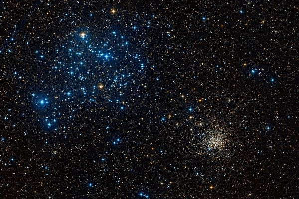

Латинское название: Gemini
Близнецы - это братья Диоскуры Кастор и Полидевк, сыновья Леды.
На небе Кастор и Полидевк сначала, конечно, ассоциировались с одноименными звездами Кастором и Поллуксом, но потом около этих звезд оформилось большое созвездие. Существует миф, что во время плавания Аргонавтов, в котором участвовали братья, над их головами сияли две звезды. Сошли ли эти звёзды на время с небес, и в это время оно было лишено своего украшения, или же поднялись на небо и воссияли там позже, остается неизвестным.
С тех пор Диоскуры почитались как покровители мореходов, а огни святого Эльма считались у моряков теми самыми огнями аронавтов-близнецов. Они воспринимались как благожелательный знак богов, но со временем выяснилось, что помощи от них мало и огни Эльма, появляющиеся обычно с приближением бури, стали скорее пугать корабелов. Впрочем, случилось это уже во времена Великих походов, когда о Диоскурах уже позабыли.
Рассеянные скопления недалеко друг от друга: M 35 в левом верхнем углу - близкое и молодое (и поэтому в нем выделяются яркие голубые звезды), NGC 2158 - в правом нижнем - далекое и старое: голубые звезды в нем уже выгорели и остались только красные и желтые.
